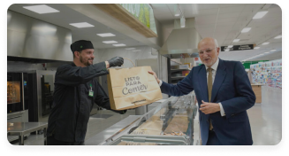

Bienvenido al evento:
"Higiene y seguridad" !

Horario 11:00 a 12:00
En agosto de 2018 Mercadona lanzaba su nueva sección Listo para Comer. Desde esa fecha, la compañía ha seguido desarrollando en sus tiendas este espacio con platos preparados de calidad y variados con los que los “Jefes” pueden mantener una dieta completa y equilibrada. Gracias a ello, la compañía cuenta, a finales de 2020, con un total de 650 tiendas con Listo para Comer, incluyendo las 20 que tiene en Portugal, donde el proyecto se conoce como Pronto a Comer
En agosto de 2018 Mercadona lanzaba su nueva sección Listo para Comer. Desde esa fecha, la compañía ha seguido...ver mas.